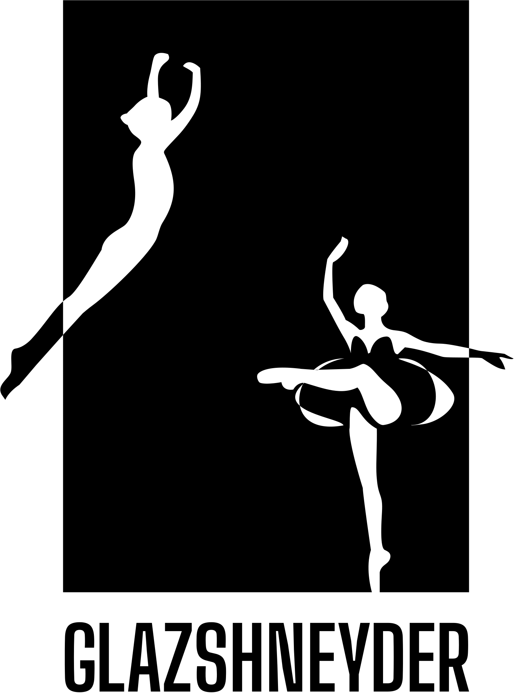
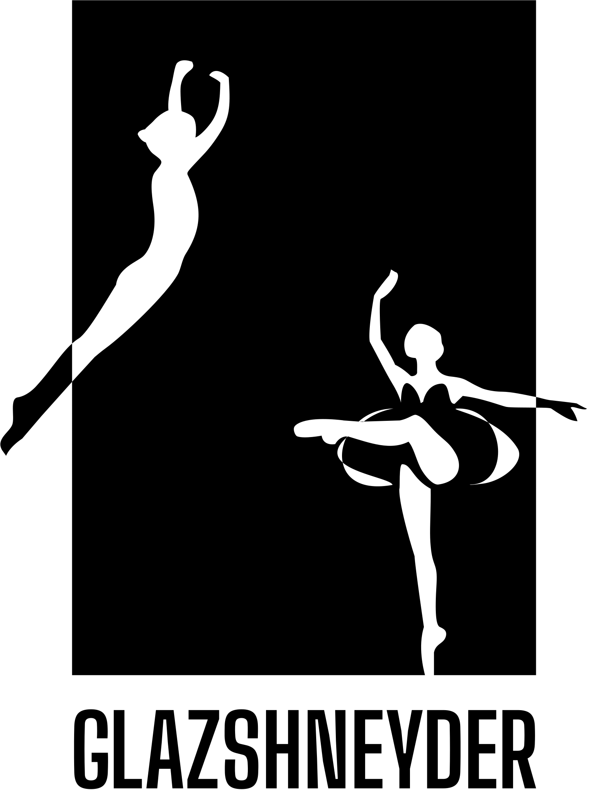

Andrey Glazshneyder

Andrey Igorevich Glazshneyder, geboren am 26. Oktober 1966 in Budapest, ist eine herausragende Persönlichkeit des internationalen Balletts und wird in der Enzyklopädie des russischen Balletts aufgeführt. Seine formative Ausbildung erhielt er an der Moskauer Staatlichen Akademie für Choreographie (Bolshoi Ballet Academy) von 1980 bis 1986, unter der Anleitung von A.I. Bondarenko. Nach seinem Abschluss wurde er 1986 Mitglied des renommierten Stanislavski und Nemirovich-Danchenko Theaters in Moskau, wo er als Hauptsolist tanzte.
Glazshneyder machte sich besonders als erster Interpret der Rolle des Mercutio in V.V. Vasilievs Inszenierung im Jahr 1990 einen Namen. Sein Repertoire umfasst eine beeindruckende Liste von Rollen in klassischen Ballettstücken wie Basil in "Don Quixote", Birbanto in "Le Corsaire", James in "La Sylphide", Figaro in "Bravo Figaro", Albert in "Giselle", Siegfried in "Schwanensee", als Prinz in "Der Nussknacker" und "Aschenputtel", Prinz Désiré in "Dornröschen", sowie als Narr in "Schwanensee" und Bacchus in "Walpurgisnacht".
Als Gastsolist trat er im Theater "Ballett Moskau" auf.
Glazshneyder wurde als Preisträger bei internationalen Wettbewerben geehrt. Er arbeitete mit Berühmtheiten wie V.V. Vasiliev, M.L. Rostropovich, D.A. Bryantsev, L.I. Semenyako, Anna Plisetskaya, Natalya Ledovskaya, Margarita Drozdova und Galina Kropivina. Seine Karriere führte ihn auf Tourneen durch Japan, die USA, Südamerika, Europa und China, wo er sein Publikum mit seiner Kunst begeisterte.
Von 2000 bis 2004 war er führender Solist am Lwiw National Opera and Ballet Theater Krushelnytska und engagierte sich gleichzeitig in der Ausbildung junger Talente. Seine pädagogische Laufbahn setzte er von 2004 bis 2008 an der Nationalen Ballet Akademie in Lwiw und von 2008 bis 2022 am Kiewer Choreografischen College "Kiyanochka" sowie am Dynamo Ballet fort, wo er seine umfangreiche Erfahrung und sein Wissen an die nächste Generation von Balletttänzern weitergab, um sie auf den Hochschuleintritt in verschiedenen Ländern der Welt vorzubereiten.
Videoausschnitte von Andrey Glazshneyders Auftritten und Lehrtätigkeit
Anna Bielova
Anna Dmitrievna Bielova, geboren am 10. November 1991 in der Ukraine, absolvierte ihre Ballettausbildung am Kyiv Choreography College, wo sie von 2009 bis 2013 studierte.
Nach ihrem Abschluss ging Bielova auf Einladung der Nationaloper der Ukraine mit dieser auf Tournee. Ihre Fähigkeiten und ihr Engagement führten sie 2014 zum Kiewer Modern Ballet unter der Leitung von Radu Poklitaru, wo sie bis 2016 blieb und ihre Fähigkeiten im zeitgenössischen Ballett weiterentwickelte.

Ihre Karriere führte sie weiter zum Ballett Ensable des International Ballet Moscow, mit dem sie von 2016 bis 2018 auf Tour ging. Diese Erfahrung erweiterte ihr Repertoire und ihre internationale Präsenz.
Von 2018 bis 2020 war Bielova Teil des St. Petersburger Balletts, Ballett an der Newa und des Klassischen Balletts Moskau, wo sie ihre klassischen Ballettfähigkeiten verfeinerte.
Von 2020 bis 2021 schloss sie sich dem International Classical Ballet Kyiv und dem Magical Ballet in den USA an. Ihre internationalen Tourneen führten Bielova durch die USA, Südamerika, Europa, Taiwan, Malaysia, Australien und China.
Bielovas Repertoire umfasst unter anderem Schwanensee, Nussknacker, La Bayadere, Dornröschen, Romeo und Julia, Giselle, Don Quixote und weitere.
Neben der Bühnenkarriere widmet sich Bielova auch der Lehrtätigkeit. Von 2020 bis 2022 war sie Lehrerin an der Dynamo Ballettschule in Kiew, wo sie ihr Wissen und ihre Erfahrung an junge Tänzerinnen und Tänzer weitergab.
Ihre Arbeit als Choreografin, insbesondere bei der Vorbereitung von Kindern und Künstlern auf internationale Wettbewerbe, hat zahlreiche Talente gefördert und inspiriert.
Kontakt
Kontaktieren Sie uns gerne per Email: contact@glazshneyder.com